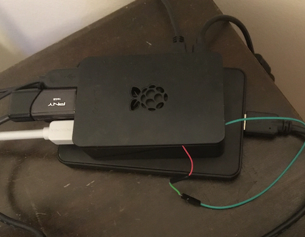
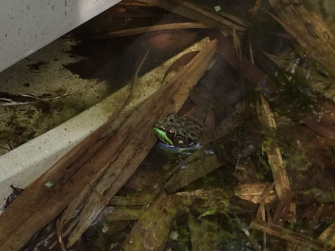

I'm a quantitative researcher and engineer currently pursuing an MSc in Mathematical and Computational Finance at Oxford. Previously, I led quant systems at Betterment, where I built trading algorithms, backtesting/simulation infrastructure, and data science tools. I studied mathematics and philosophy at Yale.
This site features some of my coding projects as well as a couple non-technical endeavors.
Selected Coding Projects
Showdown Warrior — A machine learning framework for training Pokémon Showdown battle AI. Modular architecture lets you swap decision-making strategies. Bots can learn from self-play or by watching human matches.
LumaBeat — An Arduino project that makes LED strips respond to music in real-time. Uses FFT to analyze audio frequencies and map them to colors—bass hits red, treble goes blue.

Fixing a Typo on FreeBSD Setup Screens — I ran into this while setting up my Raspberry Pi to run FreeBSD and it led to my first FOSS OS contribution :)
Some Other Stuff

My brother Tim is a musician. I maintain his site. We recently made an EP together with our sister called Horse Lizard Bird.

I reviewed Alexander Riegler, Karl H. Müller, and Stuart A. Umpleby's New Horizons in Second-Order Cybernetics for the American Book Review.